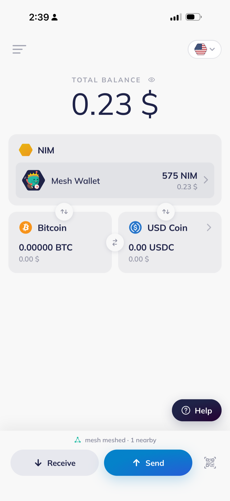
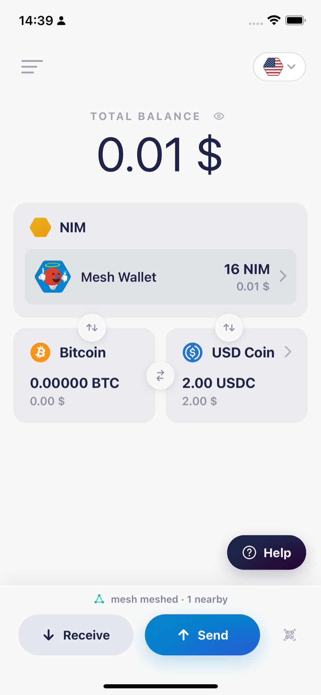

Public alpha
Sign on a phone with no signal. It hops phone to phone over Bluetooth until someone online broadcasts it for you.
Install on iPhoneOpen this page in Safari


Mainnet NIM, signed in airplane mode and carried over Bluetooth to a phone that was online. Every row is on chain. Open any of them.
Try it yourself
One phone cannot demonstrate a mesh. There has to be a second device to hand the payment to, and one of the two needs a connection.
Roadmap
Two of these work today. Three do not.
Four transfers so far, the largest 15 NIM, every one signed on a phone in airplane mode.
Messages cross between NIMmesh and a real Bitchat mesh, byte exact against their wire format. Private direct messages are the piece still missing.
Hand someone a claimable link, or ask them for an amount, with neither of you online. Bitrequest already speaks Nimiq, so a request built there could travel the same way.
Two people trade NIM for USDC with no exchange and no internet, using hash time locked contracts. Three consecutive runs settled in about 30 seconds each. The mainnet version has not been run.
The same 139 bytes fit one LoRa packet and one binary SMS, so nothing has to be split. the metro already has a community LoRa network of 60 or so nodes.